2 Types of coordinate systems
Now we start the module about geodetic control of the survey. The module includes two lessons. In the first one, I will tell you about coordinate systems used in surveying and geodetic networks. In the second lesson, my colleague Artem will talk about a geodetic control using Global Satellite Positioning Systems.
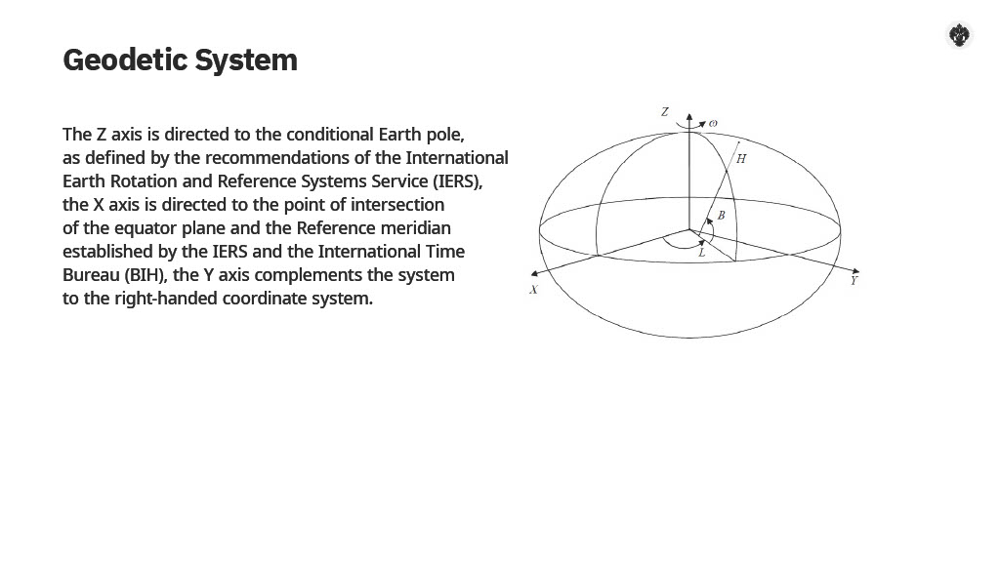
So, let’s begin. In geodetic applications, terrestrial (global) and reference (regional) coordinate systems, as well as local coordinate systems, are used. Reference coordinate systems include national geodetic coordinate systems. The Global coordinate system is a geocentric spatial coordinate system with a beginning at the mass center of the Earth. The Z axis is directed to the conditional Earth pole, as defined by the recommendations of the International Earth Rotation and Reference Systems Service (IERS), the X axis is directed to the point of intersection of the equator plane and the Reference meridian, the Y axis complements the system to the right-handed coordinate system. The Global coordinate system rotates with the Earth. In a geocentric coordinate system, the position of a point in space is determined by the values of the X, Y, Z coordinates.
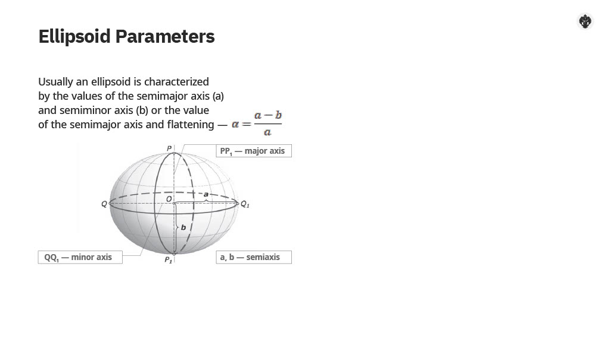
In geodetic applications, the geodetic coordinates B, L, H are used for the same purpose, referring to a common earth ellipsoid - - an ellipsoid of revolution (spheroid) whose geometric center coincides with the center of the global coordinate system. The Z axis is the axis of rotation of the ellipsoid. The geodetic latitude B is defined as the angle between the perpendicular to the ellipsoid passing through the given point and the plane of the equator; geodetic longitude L is the dihedral angle between the plane of the initial meridian and the plane of the meridian passing through a given point; the geodetic height H is the section of the perpendicular to the common terrestrial ellipsoid from its surface to a given point.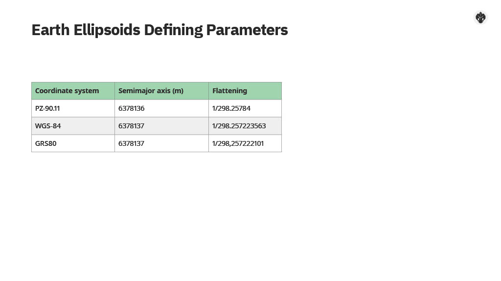
Usually an ellipsoid is characterized by the value of the semimajor axis or semiminor axis. However, there is another way of doing it - using the semimajor axis and the flattening value. Flattening is connected with the dimensions of the semiaxes through the ratio you can see on the slide. The slide shows the sizes of the main Earth ellipsoids. The implementation of global coordinates is a complex scientific task. An implementation of such a coordinate system for GPS is the WGS-84 system. The Russian GLONASS uses the PZ-90 coordinate system. An analogue of the geocentric coordinate systems PZ-90 and WGS-84 is the International Earth Support System ITRS, maintained and regularly updated by the International Earth Rotation Service.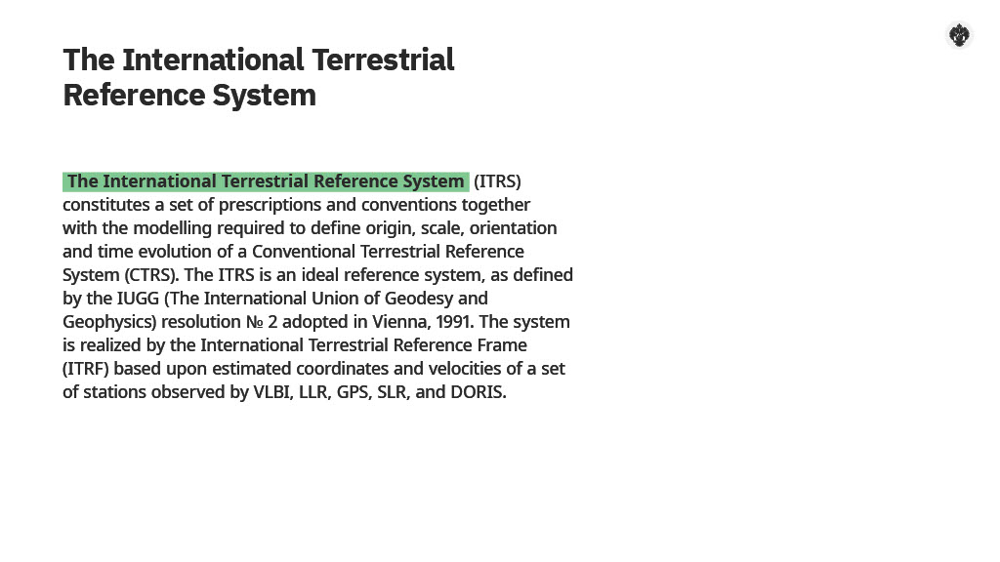
The practical embodiment of ITRS is International Terrestrial Reference Frame (ITRF), with more than 500 stations worldwide. ITRF is the most accurate embodiment of the Earth coordinate system.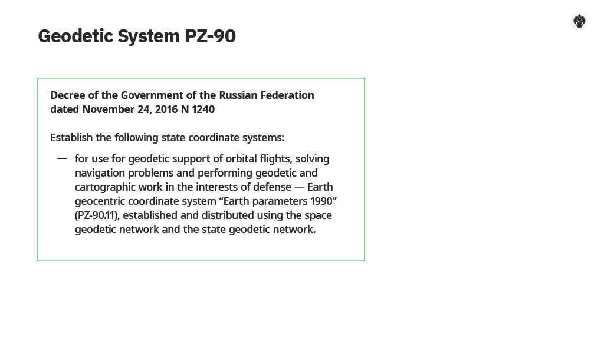
Let’s consider in more detail the Russian coordinate system PZ-90. “Earth Parameters of 1990” and its latest version PZ-90.11, established by Decree of the Government of the Russian Federation N1240 dated November 24, 2016 are a system of geodetic parameters, including fundamental geodetic constants, parameters of the Earth ellipsoid, parameters of the Earth’s gravitational field, geocentric coordinate system and parameters of its relationship with other coordinate systems. When refining the geocentric coordinate system, the data on the establishment of terrestrial coordinate systems obtained by domestic and international scientific organizations were used to the maximum. In PZ-90.11, the orientation of the coordinate axes, the linear scale and the position of the coordinate system origin converge with similar parameters of the International Earth Reference Frame ITRF in centimeters. Now let us duscuss the reference system. The reference surface in geodetic reference coordinate systems, as well as in the terrestrial coordinate system, is a spheroid. The difference is that the position of the coordinates origin in these systems and the orientation of their axes may not coincide. Thus, these systems are associated with local reference ellipsoids used in a single country or group of countries. It should be noted that it is possible to use the sizes and shapes of the same ellipsoid in various coordinate systems that differ in their orientation (initial geodetic dates).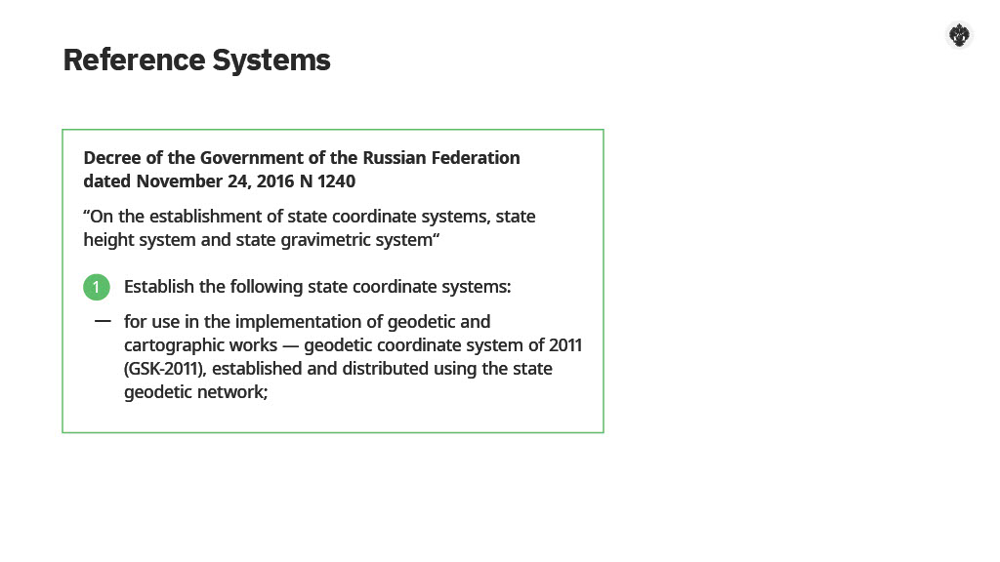
In reference systems, geodetic coordinates are usually used: geodetic latitude, geodetic longitude, and height above an ellipsoid. By the Decree of the Government of the Russian Federation N 1240 November 24, 2016, GSK-2011 geodetic coordinate system was established as the state CS for use in the implementation of geodetic and cartographic works. Since 1946, the reference coordinate system of 1942 (SK-42) was used in Russia.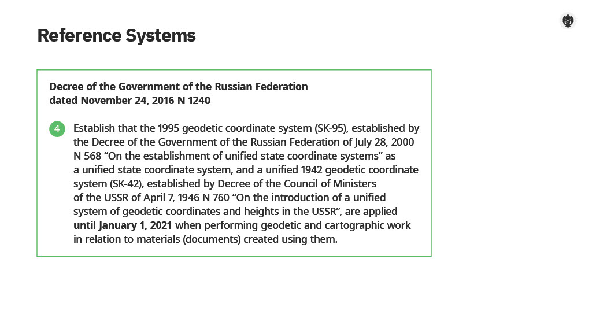
Decree of the Government of the Russian Federation of July 28, 2000 No. 568 dated July 1, 2002 introduced the geodetic reference coordinate system of 1995 (SK-95). According to the same decree No. 1240, these coordinate systems can be applied in individual cases until January 1, 2021. Let me tell you in more detail about these two systems. In the SK-42 coordinate system, the Krasovsky ellipsoid was used as a reference surface. When this sistem was established, 2 conditions had to be implemented. First: parallelism of the Z axis of the reference coordinate system to the middle axis of rotation of the Earth and parallelism of the initial astronomical and geodesic meridians planes. Due to measurement errors and limited processing (adjustment) capabilities, these conditions at that time could not be reliably controlled, which led to the rotation of the reference coordinate system axes, which was first reliably estimated in the early 80s using satellite data.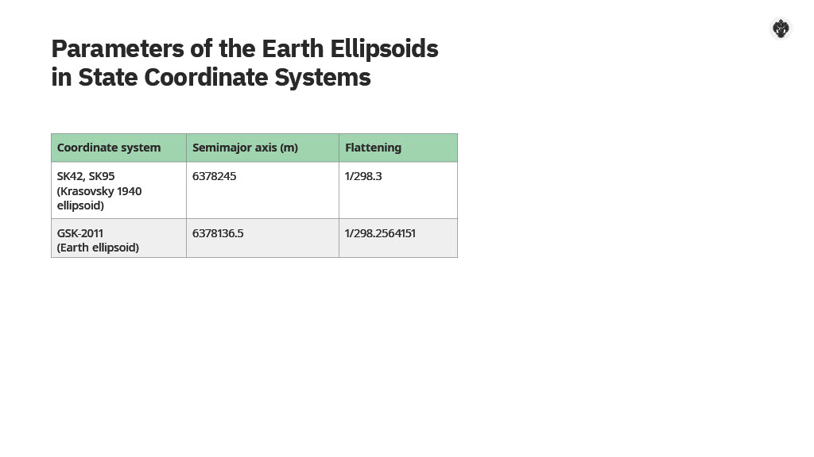
The reference surface in the 1995 coordinate system, as well as in SK-42, is the Krasovsky ellipsoid. The axes of the SK-95 coordinate system are set under the condition of parallelism to the axes of the terrestrial coordinate system PZ-90. With the transition to GSK-2011, we moved away from using a reference ellipsoid. GSK-2011 geodetic coordinate system is a practical implementation of the terrestrial spatial coordinate system with the origin at the Earth mass center.2.1 Types of Coordinate systems and Vertical Datum
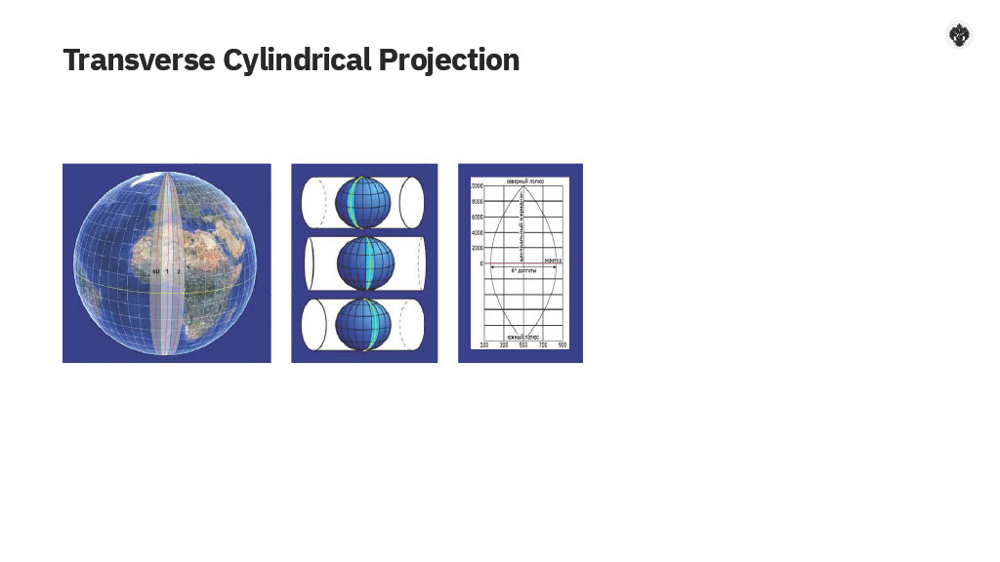
The ellipsoidal coordinates B and L are often converted to planar x and y coordinates in different cartographic projections. One of the types projections is a cylindrical projection, in which the surface of the ellipsoid is first projected onto the surface of the cylinder, and then the cylinder rotates to the plane.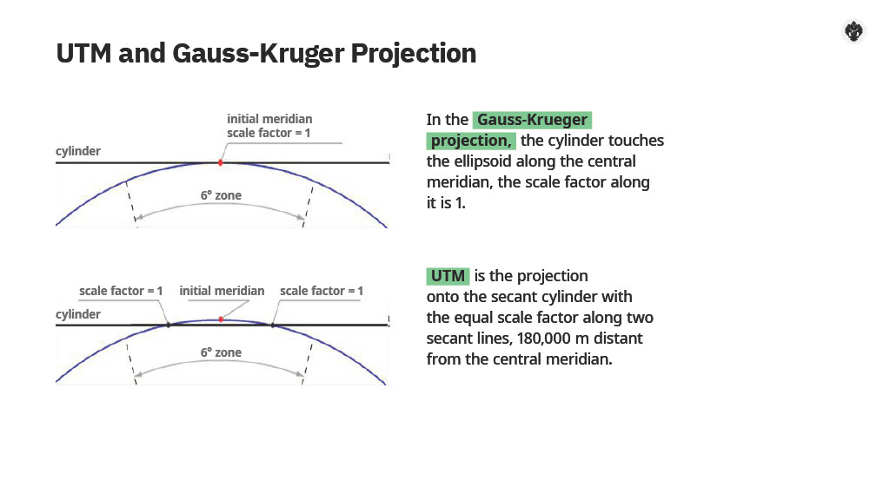
One of the commonly used projections is the transverse projection of the Mercator (Universal Transverse Mercator - UTM). In this projection, the ellipsoid is divided into 60 zones, each zone is 6 degrees in longitude. The scale on the initial meridian is 0.9996. Zones are counted from the initial meridian to 180 to the east.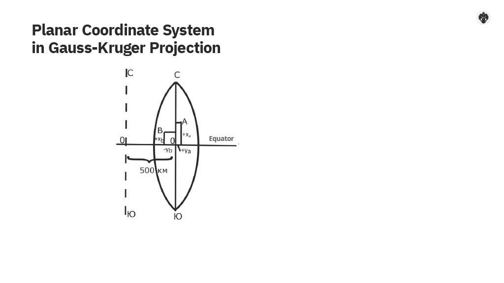
The Gauss-Kruger projection is widespread in Russia and the CIS countries. Its difference from the transverse projection of the Mercator is that the scale on the initial meridian is 1, and the zones are counted from the initial zero meridian to the east. On the plane of a projection, you can enter a system of plane rectangular coordinates. For example, in Russia a planar coordinate system is implemented on the plane of the Gauss-Krueger projection. The initial meridian is taken for the abscissa axis, and the equator line for the ordinate axis. Moreover, in order to avoid negative ordinates, the y value for the point on the initial meridian is set to 500 km. In front of each ordinate is assigned a zone number.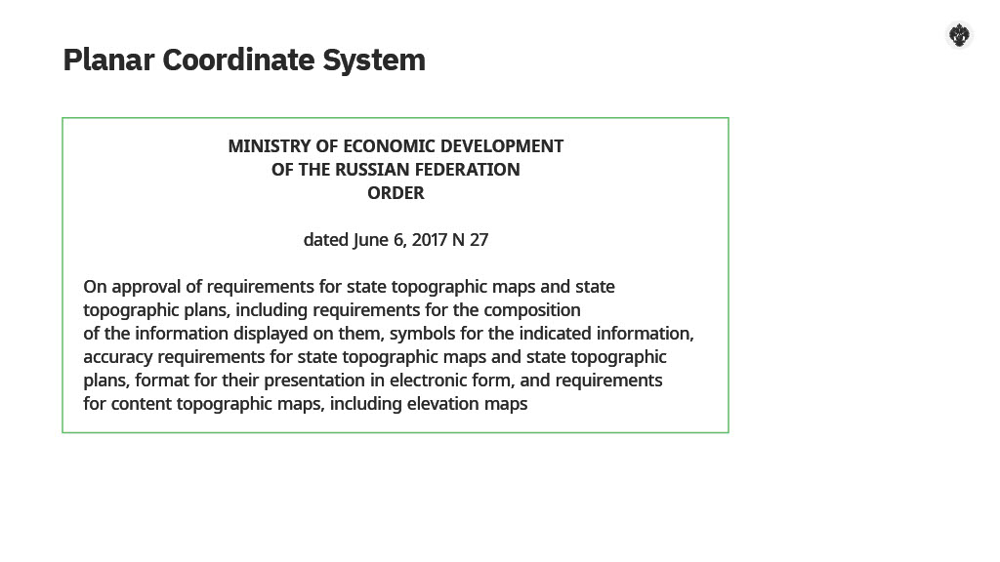
Such a system of planar coordinates was implemented for the SK-42 reference system and adopted in the USSR as a state one and was used to create topographic maps. Also, the SK-63 planar coordinate system, which was obtained from SK42 by shifting and turning, was often used. It was established to avoid secrecy in large-scale cartographic works.
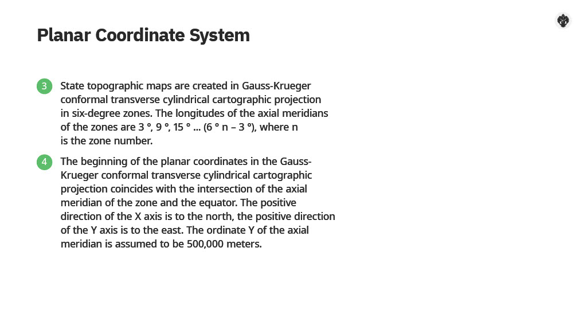
In accordance with Order No. 271 of the Ministry of Economic Development dated June 6, 2017, the Gauss-Krueger projection and the corresponding plane coordinate system are still being used to create state topographic maps. Most often in topographic and geodetic practice, you have to work in local coordinate systems. The procedure for establishing local coordinate systems was approved by order of the Ministry of Economic Development No. 383 dated July 28, 2017. In accordance with this order.The local coordinate system is the CS established in relation to a local area not exceeding the territory of a subject of the Russian Federation. The beginning of the coordinate system, the coordinate axes of the local coordinate system must not coincide with the beginning of the coordinate system, the coordinate axes of the state coordinate system, used forof geodetic and cartographic works implementation.
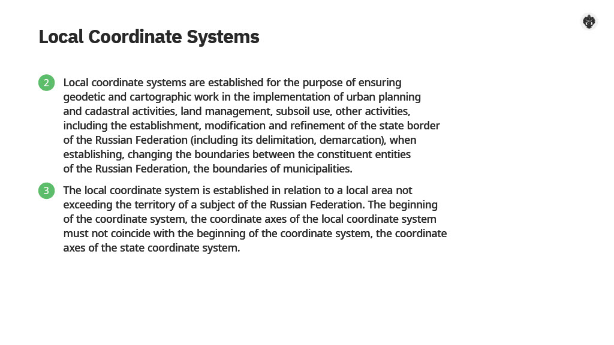
Local coordinate systems are established for geodetic and topographic work during engineering surveys, construction and operation of buildings and structures, land surveying, cadastre management and other special works. A mandatory requirement in establishing local coordinate systems is to enable the transition from a local coordinate system to a state coordinate system, which is carried out using transition parameters (keys). Each local coordinate system can be created from one or several three or six degree zones. The parameters of local coordinate systems and the keys to the transition to the state coordinate system are established by the Roseestr in agreement with the Ministry of Defense of the Russian Federation.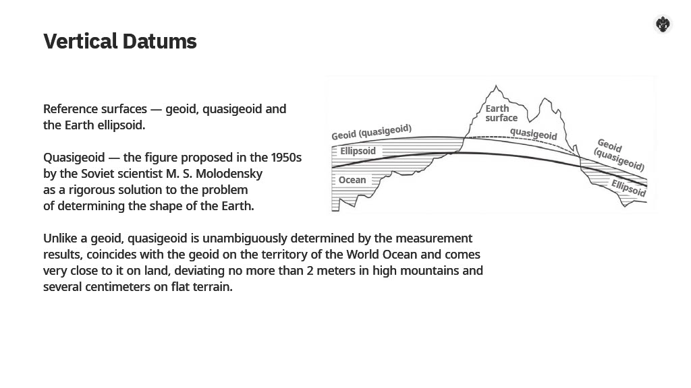
When establishing a vertical datum, the decisive factor is the choice of the relativity surface and the starting point, whose height is assumed to be zero. Relativity surfaces are geoid and quasigeoid. Orthometric heights are counted from the surface of the geoid, and normal heights from the surface of the quasigeoid. In practice, geodetic heights which are counted from the surface of an ellipsoid (Earth or reference) are also used. A geoid is a figure of the Earth formed by a level (equipotential) surface of the gravity potential, which coincides with the surface of the World Ocean in a rest state and continues under the continents. An exact determination of the position of the geoid relative to the selected ellipsoid from ground-based measurements is impossible. Mathematically, a quasigeoid – a surface close to a geoid – can be determined strictly from ground-based gravity data. The mismatch between the geoid and the quasigeoid averages 2–5 cm in the lowlands and can reach 2 m in the highlands. The connection between geodetic and normal heights and between geodetic and orthometric heights is established by the relationships you can see on the slide. Normal heights are independent of the ellipsoid choice. The geodetic heights and the quasigeoid heights depend on the ellipsoid choice. Normal heights are displayed on topographic maps and are given in the coordinate directories of geodetic points.
Mathematically, a quasigeoid – a surface close to a geoid – can be determined strictly from ground-based gravity data. The mismatch between the geoid and the quasigeoid averages 2–5 cm in the lowlands and can reach 2 m in the highlands. The connection between geodetic and normal heights and between geodetic and orthometric heights is established by the relationships you can see on the slide. Normal heights are independent of the ellipsoid choice. The geodetic heights and the quasigeoid heights depend on the ellipsoid choice. Normal heights are displayed on topographic maps and are given in the coordinate directories of geodetic points.
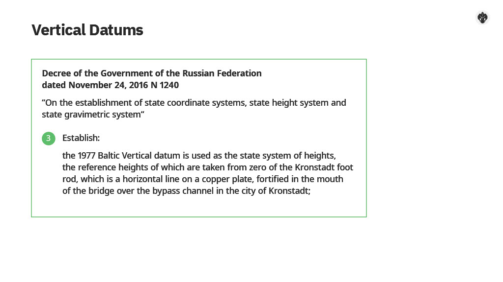
In accordance with Decree of the Government of the Russian Federation dated November 24, 2016 N 1240 “the 1977 Baltic Vertical datum is used as the state system of heights, the reference heights of which are taken from zero of the Kronstadt foot rod, which is a horizontal line on a copper plate, fortified in the mouth of the bridge over the bypass channel in the city of Kronstadt”2.2 Geodetic Control Network and Coordinate Transformation
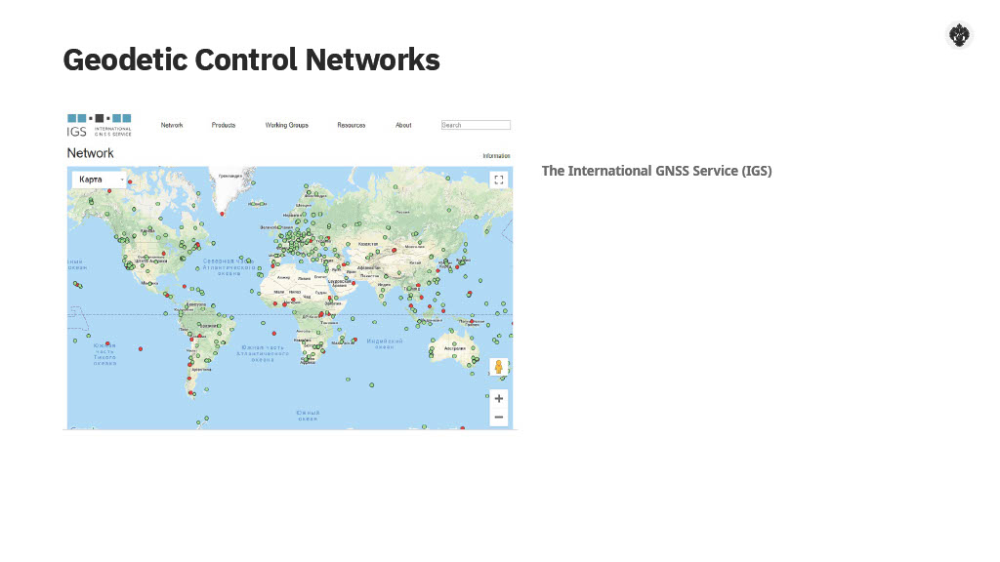
Now let’s consider geodetic networks. The physical implementation of a particular coordinate system is geodetic networks, i.e., fixed to the terrain points which coordinates and heights are determined by geodetic measurements. For example, as already mentioned, the ITRS is implemented as the ITRF, with more than 500 stations worldwide. You can view the location of ITRF stations and download the observational data on the International GNSS Service (IGS) Web site.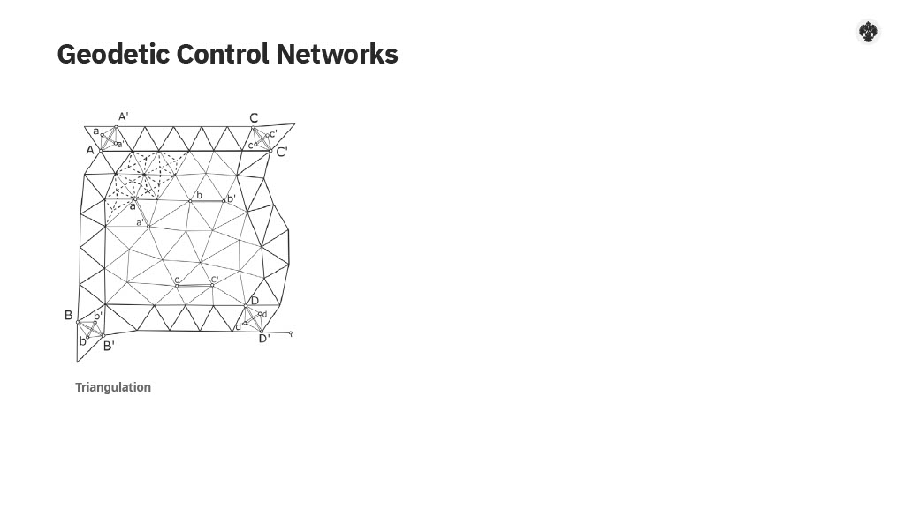
State coordinate systems are implemented and extended to the territory of the country in the form of state geodetic networks. During the 19th and 20th centuries, gigantic work was done to create geodetic networks in our country. A large amount of works was performed during the Soviet period.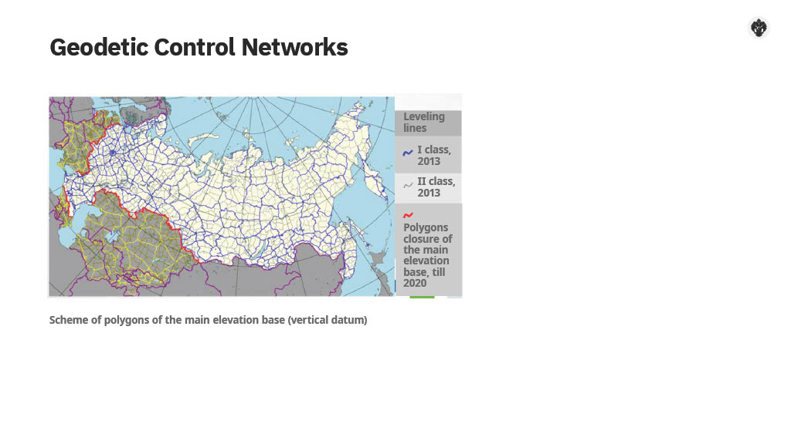
Geodetic networks are divided into planar and vertical and they are built on the principle from general to particular, i.e. from high-precision but rare networks to denser but less accurate. Planar networks were created by classical methods of triangulation and polygonometry. They were divided into four accuracy classes. Rows of first-class triangles were laid along the meridians and parallels. At the intersection of the rows, basis networks were constructed, the lengths of the bases were measured. At the ends of the bases or the output (basis) sides, astronomical determinations of longitudes, latitudes, and azimuths were made, it is necessary for reduction the network to the surface of the reference ellipsoid. Inside the polygons of the first-class triangulation, a continuous network of the second-class triangles was built. In turn, it is filled with triangulation networks 3 and 4 classes. The sides of the first-class triangles have 20-25 km lengths, the second class have 7-20 km length, average 13 km. The lengths of the triangle’s sides of the of 3 class are 5-8 km, and 4 class - 2-5 km. Each point of the network is securely fixed on the terrain. Fixing methods may vary depending on terrain conditions and soil types. State leveling networks are divided into four classes (I-IV) depending on accuracy. In the 20 century, the whole country was covered by a network of high-precision levelings of I and II classes. First class leveling lines are laid and repeated every 25 years in pre-selected directions that cross the country’s territory. Leveling lines of the second-class form polygons between points of the first class with a perimeter of 500-600 km. Leveling lines of the third-class form polygons with a perimeter from 150 to 300 km. Fourth class leveling is done for surveying and is designed in conjunction with all survey works. All points of the leveling network - benchmarks, are variously fixed on the ground.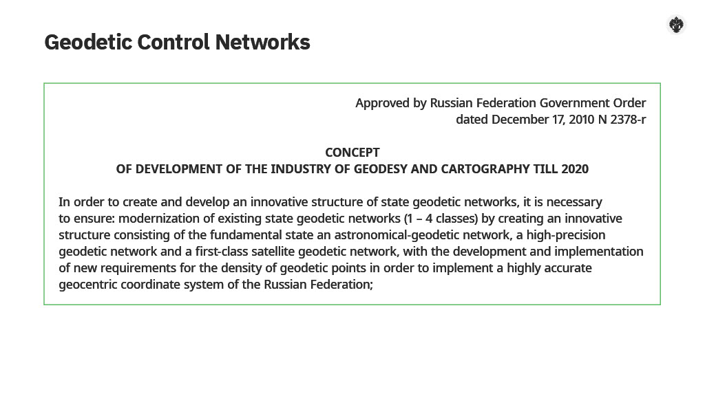
In accordance with the CONCEPT OF DEVELOPMENT OF THE INDUSTRY OF GEODESY AND CARTOGRAPHY TILL 2020 Approved by Russian Federation Government Order dated December 17, 2010 N 2378-r modernization of state geodetic networks is provided. The highest level is the Fiducial Astronomic Geodetic Network (FAGN).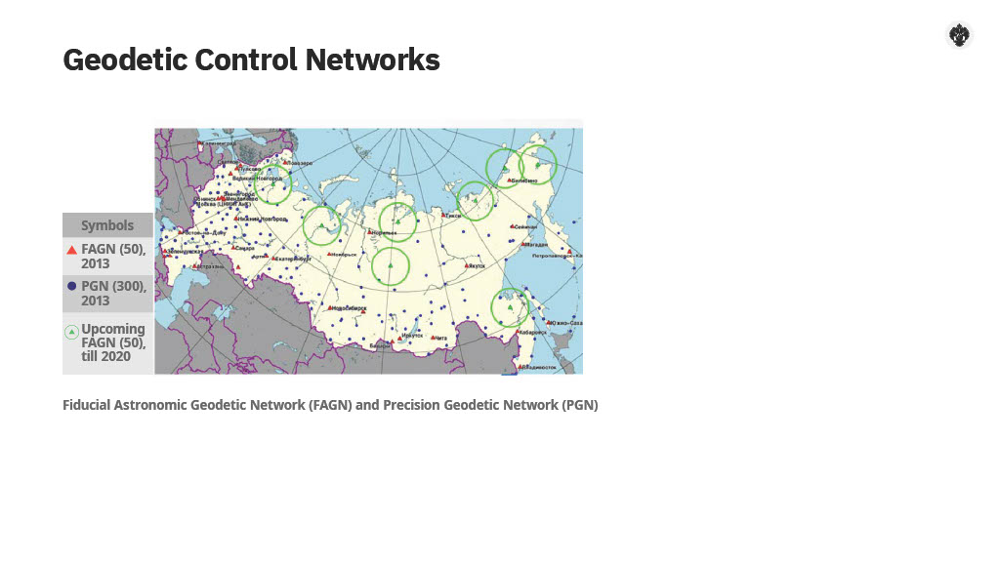
The Precision Geodetic Network (PGN) relies on it and the 1st Class Satellite Geodetic Network (SGN-1) relies on PGN. This is followed by the previously created Astronomic Geodetic State Networks (AGN). Fiducial Astronomic Geodetic Network (FAGN) is the main geodetic base for the State Geodetic Network (SGN) creation. FAGN consists of constantly operating and periodically determined points that form a single network in the territory of the Russian Federation. The spatial position of these points is determined by the space geodesy methods in the Earth coordinate system. he Precision Geodetic Network (PGN) is a spatial geodetic construction, uniform in accuracy, based on the FAGN points. The main function of the PGN is the distribution of the geocentric coordinate system throughout Russia. 1st Class satellite geodetic network (SGN-1) is a spatial geodetic construction, the main function of which is to provide optimal conditions for the implementation of the accuracy and operational capabilities of satellite equipment while transition the geodetic support of the Russian territory to satellite methods for determining coordinates.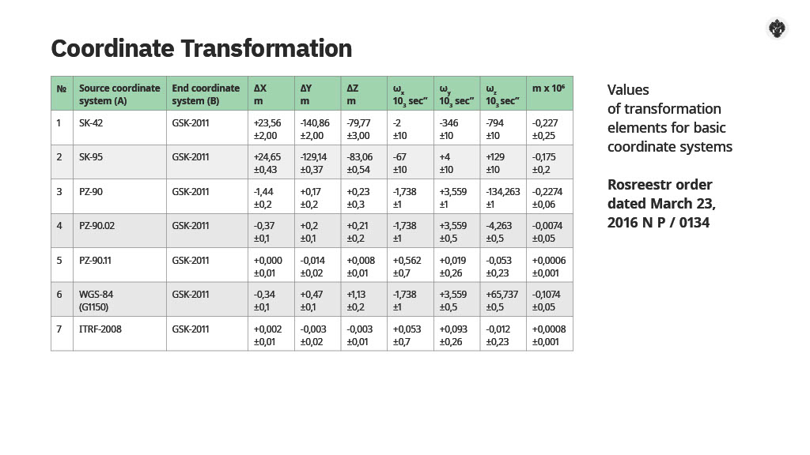
For the SGN-1, AGN and the leveling network connection, a part of the SGN-1 points must be combined or connected with existing AGN points and reference points of the leveling network. Within the framework of the federal target program “Maintaining, developing and using the GLONASS system for 2012-2020,” the Rosreestr plans to create 45 FAGN points, 375 PGN points and 5640 SGN-1 points till the end of 2020. Now briefly talk about the problem of the transition between coordinate systems. This problem arises because of the fact that directly from observations using GNSS we obtain the points coordinates in a global geocentric coordinate system, since the position of the satellites is also determined by their ephemeris in one of such systems (WGS-84 or PZ-90). However, the results of the works often should be presented either in the state geocentric coordinate system GSK-2011 or in the state system on the plane of the Gauss-Krueger projection or in one of the local systems.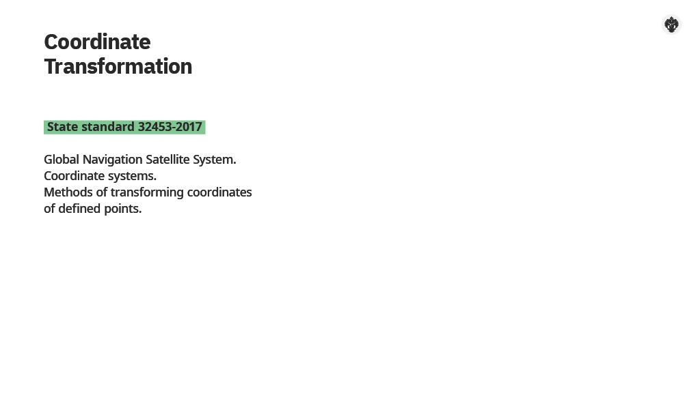
Thus, the following tasks may be: 1. Transition from one geocentric spatial coordinate system to another geocentric spatial system. 2. Transition from a geocentric system to the state plane coordinates system on the plane of the Gauss-Kruger projection. 3. Transition from the state system of spatial or planar coordinates to the local coordinate system. The transformation of spatial rectangular coordinates from system A to system B is performed according to the formula you can see on the slide. Values of transformation elements for basic coordinate systems, used in Russia are given in Rosreestr order dated March 23, 2016 N P / 0134. If the transformation elements value is not known, but on the terrain, there are at least three known coordinate points in one of the systems and obtained from observations in another system, then the values of the transformation parameters can be calculated from the solution of the corresponding equations system. Thus, this transformation does not cause big problems.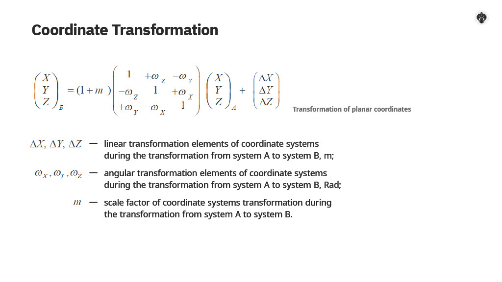
To implement a transition to a planar coordinate system on the projection plane, firstly, using the parameters of one or another ellipsoid, we transit from spatial coordinates to geodetic i.e. to latitude, longitude and geodetic height, and then transit to planar coordinates. This is carried out according to well-known formulas that can be found in spheroidal geodesy and mathematical cartography textbooks, as well as in State standard 32453-2017. Very often we work in a local coordinate system. To transit to this CS, we, of course, can use the transition key by requesting it from Rosreestr. The second way is often much simpler, it is much easier to get the coordinates of several points in Rosreestr than the transition key. Therefore, these networks may have heterogeneities i.e. individual sections of the network may have shifts relative to others. If you perform work on a specific relatively small area, it is better to bind to the SGN points in this territory in order for your materials to be in good agreement with the previous ones According to the instructions for the development of the geodetic control networks using GNSS, at least 4 points with known planar coordinates and at least 5 points with known heights should be used. And two more words about the heights. It is important to understand that we get geodetic heights relative to one or another ellipsoid. To transit to a normal heights system, we must either know the height anomalies for a given territory, or make a transition using points with known normal heights. To transit to orthometric heights, you can use special geoid models. For example, the EGM2008 model includes detailed gravitational anomalies in a resolution of 5x5 minutes.
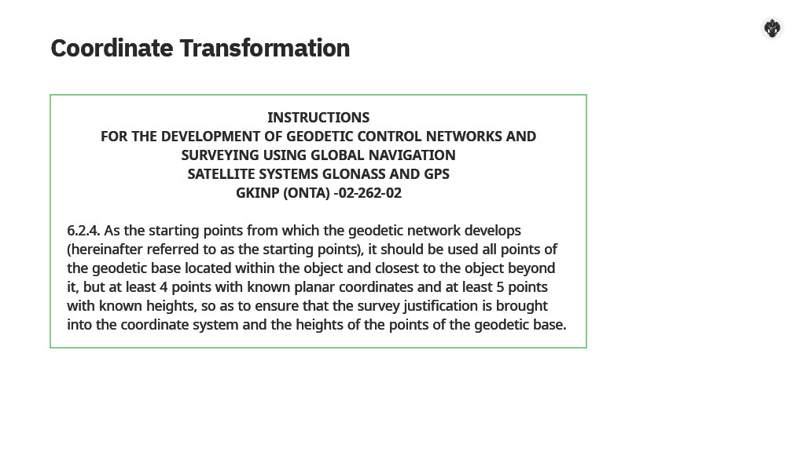
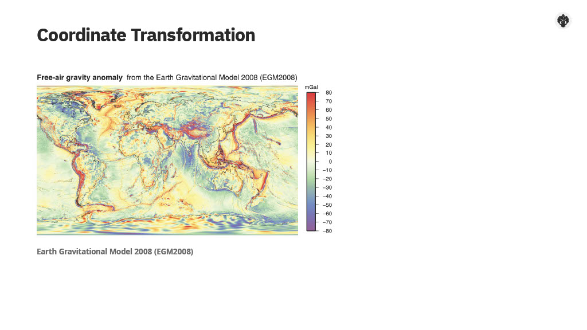
music Hello. In this lesson we will talk about why it is necessary to provide geodetic control. There are two main tasks: binding to the desired coordinate system (CS) or vertical datum, for example, the local coordinate system of the city and accuracy control of works performed. Let’s consider the first task. The binding to the CS is carried out in order to make the end product (orthomosaic, DEM or a three-dimensional model) consistent to the existing documentation in coordinates and vertical datums (topographic plans, development and land use plans, land surveying plans, etc) If a topographic plan or other of the abovementioned documents is created on the basis of an orthomosaic, the binding is made to connect and match the new topographic plans with the old ones. Simply, the binding to the CS is performed so that all engineering surveyors, operating organizations, designers worked in a single system and no one has inconsistencies. It is worth mentioning that if DEM is created on the basis of aerial photography, then it must be used correct vertical datum. A unified system of normal heights is established for the Russian Federation - Baltic 77. You have learned about this in detail in the previous lesson. Accuracy control of work performed is extremely important. With the help of geodetic measurements (satellite mostly) plan-fact comparisons are made. The coordinates and heights of special control points obtained by instrumental methods and taken from the orthomosaic or DEM are compared. After that, the standard error (SE) of the coordinate mismatch are calculated. If the obtained errors correspond to the expected for a given scale, a conclusion is issued on the correspondence of the orthomosaic to the required scale and the quality of the aerial survey work. Otherwise, they clarify the reasons, perform a re-adjustment or even implement a survey again. It is worth mentioning that there are a number of tasks for which there is no need in high-precision geodetic control. 1.Artistic shooting of photo and video from UAV. 2.Creation of 3D-models of buildings and structures, if the task is not to fit the model into the surrounding space. 3.The creation of 3D-models of the environment in order to render an architectural concept of new construction against their background. 4.Create spherical or flat aerial panoramas. All these tasks are focused mainly on the artistic quality of the image or on obtaining information without measurements or binding. Now let’s talk about the methods used to solve the abovementioned tasks. In the pre-satellite era, coordinate and altitude aerial photography binding was carried out using classical methods for determining coordinates and heights - linear-angular constructions and leveling. These works were extremely costly and made up a significant part of the cost of the end product - - a map or topographic plan. With the development of satellite methods in geodesy, it became possible to quickly determine spatial coordinates with high accuracy. At the moment, in the majority of cases, satellite methods are used for solving the problem of aerial photography binding and accuracy control. With their help, the coordinates and orientations of the aerial camera are determined in flight, they are driven along the given routes of the aircraft and a network is created on the ground with the necessary number of identifications. Satellite geodesy has been widely developed and put into practice since the beginning of the 21st century after the coarsening of accuracy on GPS frequency L1 was canceled by decree of US President Bill Clinton in 2000. When performing satellite coordinate measurements, the main determinable parameter is the distance between the satellite and the receiver. The simultaneous determination of the distance values to several satellites allows us to calculate the coordinates of the observation point if the coordinates of the satellites are known by the method of spatial linear notching. Depending on the purpose of the tasks to be solved, absolute and relative (differential) methods of coordinate definitions are distinguished.2.3 Goals and Objective Shooting Support GNSS Method
2.3.1 Introduction to GNSS
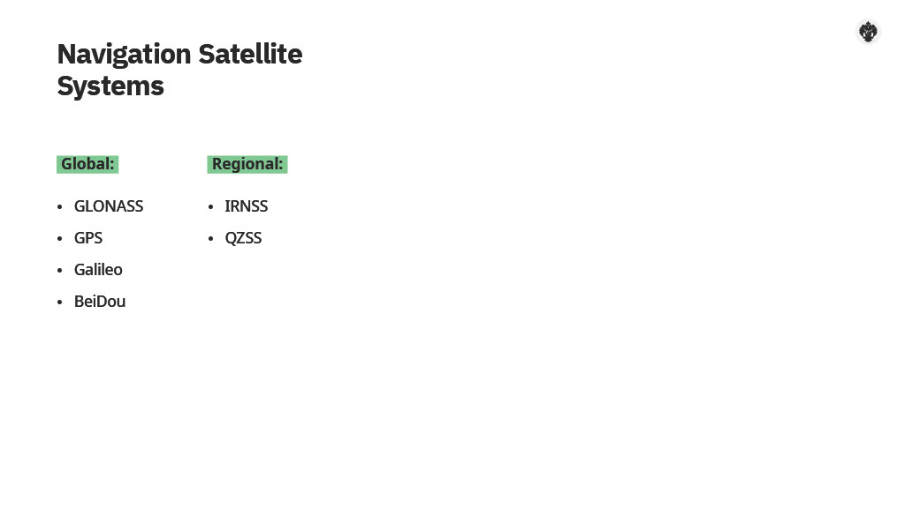
music A global navigation system is a system designed to determine the exact location or coordinates of static or moving objects. By the beginning of 2020, there are four fully functioning global navigation satellite systems. These are the Russian GLONASS system, the American NAVSTAR, better known as GPS, the European Galileo system and the Chinese Běidǒu. There are also regional satellite systems: IRNSS - Indian, QZSS - Japanese, and satellite systems for special purposes.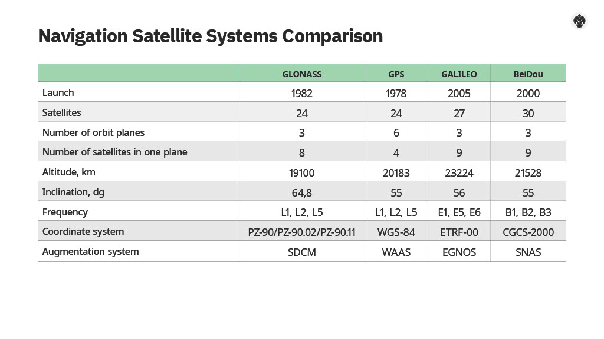
Let’s consider the main characteristics of global satellite systems. The table is on the slide. Here, we can see the two relatively old systems - - the GPS system and GLONASS - while the other two - BeiDou and Galileo - - were launched relatively recently. All these systems provide full coverage of the Earth surface. However, they have different orbits. For example, Galileo, BeiDou and GLONASS use three orbits, while GPS uses as many as 6 orbits. They also have nearly the same altitudes of the orbits, because it has been mathematically proven that the altitude of around 20,000 kilometers is optimal for navigation. All these system have tree operating frequences - L1, L2, L5, or they can be called E1, E2, E5. So far, GLONASS does not use the L5 frequency, but it is going to be added soon. In the slide, you can also see the parameters of the Earth ellipsoid that these sytems use.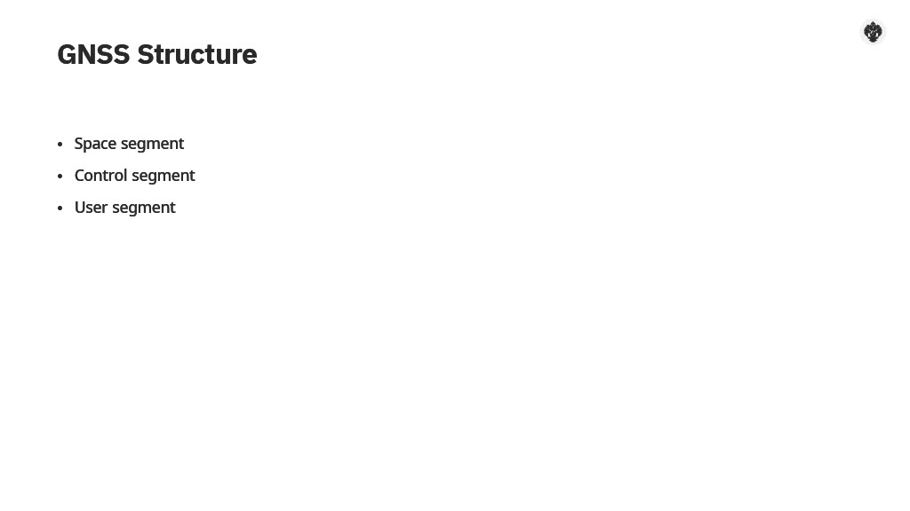
All satellite systems consist of 3 sectors: 1.The space sector includes artificial earth satellites. 2.The control and monitoring sector is a complex of ground-based facilities, monitoring stations, provides continuous monitoring of satellites in order to clarify their orbits, and to predict motion over a certain time interval in the form of ephemeris stored in the satellite’s memory. 3.User sector. The space sector includes a set of artificial satellites included in the positioning system. Typically, a group of satellites is called “constellation.” Equipment that plays the role of a transmitting part of a one-way radio rangefinder complex is installed on the satellites.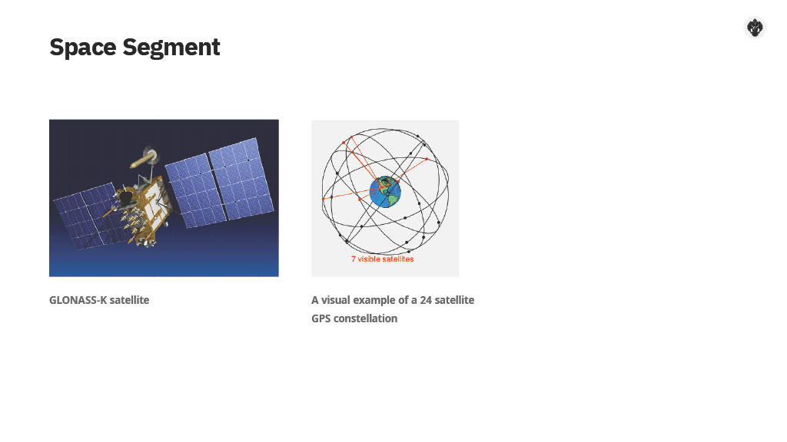
This equipment transmits to the Earth radio signals, on the basis of which the distance between the satellite and the ground observation point is measured, as well as a navigation message containing information about the satellite ephemeris, about corrections to the readings of its clock, about the almanac, which carries truncated information about all constellation satellites. As we have already considered, the orbit altitude of all satellite systems fluctuates around 20,000 km above the earth’s surface. Unambiguous positioning is possible only when observing 4 or more satellites. In this regard, the total number of satellites must be at least 24 in order for the system to be considered as a global. Satellite in the constellation is a platform with various equipment installed on it. In addition to the main transceiver equipment, the satellites are equipped with solar panels with batteries for uninterruptible power supply, and inertial systems that enable the satellite to assess its own spacial location. Each satellite is also equipped with a jet engine with a fuel supply for the entire service life. An engine is needed to correct the position and orbit of the satellite. One of the most important elements is the atomic clock, which ensures the synchronization of all GNSS elements in a single time field.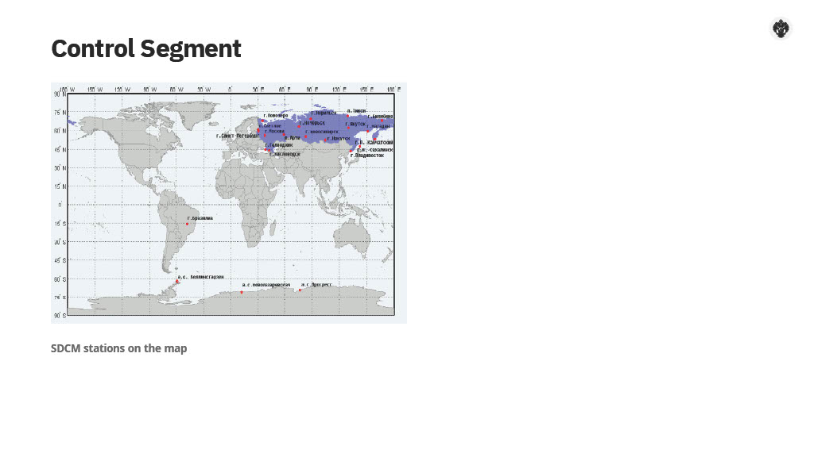
Control segment consists of several tracking stations. The main goal of this sector is to monitor the performance of satellites, systematically clarify the ephemeris of each satellite and the parameters of the adopted atmospheric model, adjust the clocks installed on each satellite, periodically update the contents of the navigation message and arrange the transmission of this message using loading stations to each served satellites. The current values of the satellite ephemeris are refined using the spatial linear notch method. With this purpose simultaneous measurements of distances to the satellite are carried out from at least three ground stations, the coordinates of which are determined with high accuracy. Correction of satellite clock is carried out by comparing the time samples taken on the radio channel for these clocks with the corresponding indication of the ground reference clock that are part of the control and monitoring sector. Atmospheric corrections are also constantly monitored and adjusted. The consumer sector is the entire set of equipment that allows you to receive signals from satellites. This sector includes both consumer devices such as smartphones, tablets, car navigators, sports trackers, as well as more complex specialized devices. Among these devices, we are interested in surveying equipment. Usually these are satellite receivers combining an antenna and a signal processing board. However, there are systems with diversity antenna and receiver in different cases. This also includes permanent base stations broadcasting corrections in real time. Satellite equipment is constantly being improved. Even 10 years ago it was difficult to imagine a geodetic receiver with three carrier frequencies for less than $ 2,000. Now the user has the opportunity to choose from several such receivers. Systems of permanent base stations are expanding. The high density of such networks allows us to implement high-precision measurements in RTK mode using only one receiver. Wherein, a fixed coordinate solution is obtained in less than 3 seconds. It can be argued that in almost all Russian cities, population of which exceeds 50 thousand people, at least one permanent station is installed. The total number of such stations in our country exceeds 1000 pieces. In addition, some analysts predict a radical increase in the accuracy of determining coordinates in household devices - from the current 3 - 15 m to 0.1 - 1 m. The development of satellite methods has tremendously changed not only geodesy, but also logistics and navigation. Without satellite navigation it is hardly imagine the appearance of unmanned vehicles in their modern form.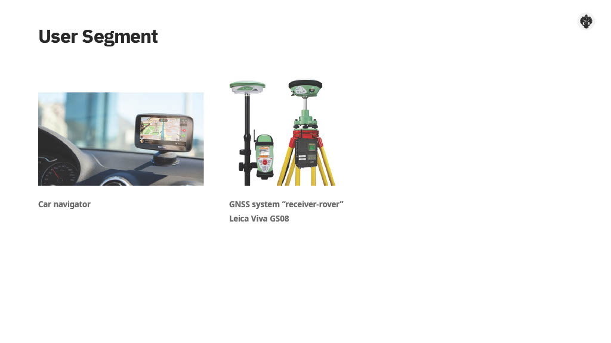
Control segment consists of several tracking stations. The main goal of this sector is to monitor the performance of satellites, systematically clarify the ephemeris of each satellite and the parameters of the adopted atmospheric model, adjust the clocks installed on each satellite, periodically update the contents of the navigation message and arrange the transmission of this message using loading stations to each served satellites. The current values of the satellite ephemeris are refined using the spatial linear notch method. With this purpose simultaneous measurements of distances to the satellite are carried out from at least three ground stations, the coordinates of which are determined with high accuracy. Correction of satellite clock is carried out by comparing the time samples taken on the radio channel for these clocks with the corresponding indication of the ground reference clock that are part of the control and monitoring sector. Atmospheric corrections are also constantly monitored and adjusted. The consumer sector is the entire set of equipment that allows you to receive signals from satellites. This sector includes both consumer devices such as smartphones, tablets, car navigators, sports trackers, as well as more complex specialized devices. Among these devices, we are interested in surveying equipment. Usually these are satellite receivers combining an antenna and a signal processing board. However, there are systems with diversity antenna and receiver in different cases. This also includes permanent base stations broadcasting corrections in real time. Satellite equipment is constantly being improved. Even 10 years ago it was difficult to imagine a geodetic receiver with three carrier frequencies for less than $ 2,000. Now the user has the opportunity to choose from several such receivers. Systems of permanent base stations are expanding. The high density of such networks allows us to implement high-precision measurements in RTK mode using only one receiver. Wherein, a fixed coordinate solution is obtained in less than 3 seconds. It can be argued that in almost all Russian cities, population of which exceeds 50 thousand people, at least one permanent station is installed. The total number of such stations in our country exceeds 1000 pieces. In addition, some analysts predict a radical increase in the accuracy of determining coordinates in household devices - from the current 3 - 15 m to 0.1 - 1 m. The development of satellite methods has tremendously changed not only geodesy, but also logistics and navigation. Without satellite navigation it is hardly imagine the appearance of unmanned vehicles in their modern form.2.3.2 Methods used in GNSS Measurements
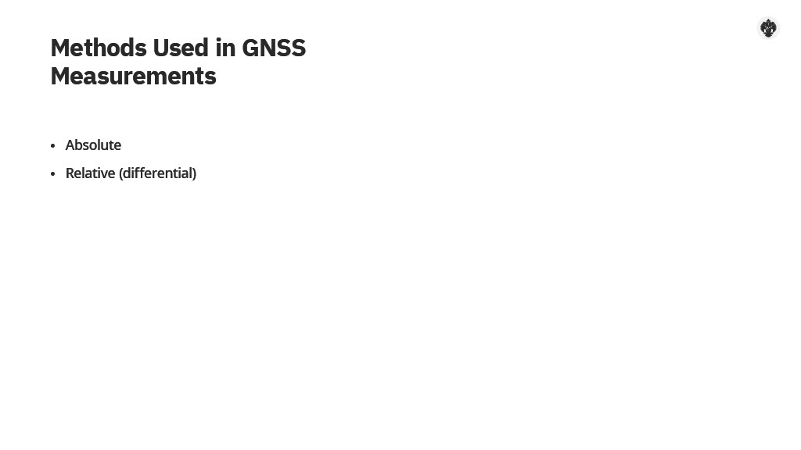
Let’s talk about the various methods used in GNSS measurements. As already mentioned, the main determinable parameter in GNSS measurements is the distance between the receiver and the satellites. There are several methods distinguished - absolute, relative and differential. Absolute methods are characterized by low accuracy. The total error of absolute definitions, characteristic for the C/A code, is about 8 meters for GPS and from 6 to 9.5 for GLONASS, depending on the satellites used (near-zenith or near-horizon). Of course, for near-horizon satellites, this value will be around 9.5 m. The most effectively problem of increasing accuracy is solved through the use of differential methods of GNSS measurements. Some variants of differential measurements have been developed, the generalizing characteristic feature of which is the use of the measurements processing results, not of absolute values recorded with the receiver of quantities, but of various differences, the formation of which excludes common terms inherent in the compared values, at the final stage. Differential methods are used for coordinate definitions of both stationary and moving objects. In this case, the final coordinate values can even be in real time. Also, differential methods provide much higher accuracy than the absolute methods of satellite geodesy. The difference between the relative and differential method is small. Both methods use two receivers. In the differential method, as already mentioned, with the help of the difference method, differential corrections are searched and put into the corresponding observation parameters at the determined point. That is, observations are essentially processed separately. In the relative method, observations made simultaneously at the reference and determined point are processed together.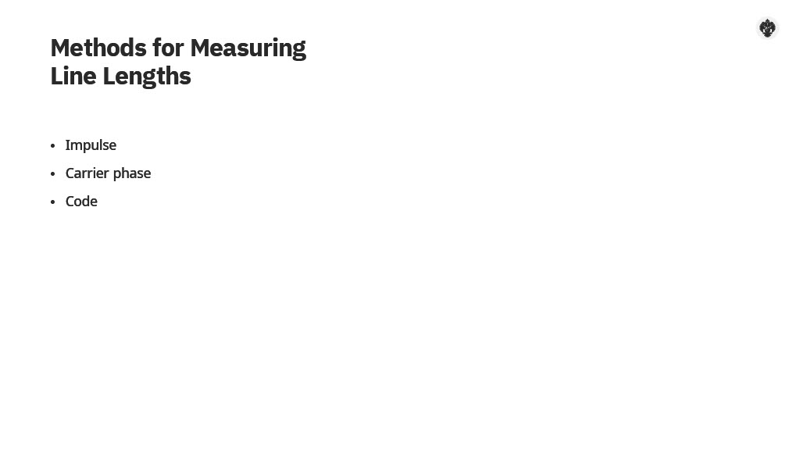
By the principle of measuring line lengths in GNSS observations, impulse, carrier phase and code methods can be distinguished. Impulse methods are mainly used in laser rangefinder systems. These systems use a two-way distance measurement method when a satellite is irradiated from a ground station and the signal travels a distance twice. We will not dwell on them in details, because bilateral methods are not used in geodetic systems. In the process of taking measurements for the code method, the corresponding encoded signal is generated on the satellite, and in the consumer equipment, to determine the range, a reference response signal must be generated, which is a similar encoded signal. In the practical use of this method for ranging purposes, the travel time is determined from a comparison of these signals using the code correlator in the receiver. Carrier phase methods are based on the use of harmonic oscillations of the decimeter range of radio waves as information signals. The negative factor of carrier phase measurements is that in the absence of any information about previous measurements, the phase meter allows you to determine the phase difference only within one phase cycle. In simple terms, it is necessary to somehow find out how many complete periods of phase change fit into the time the signal travels from the satellite to the receiver. The process of finding this quantity is called ambiguity resolution.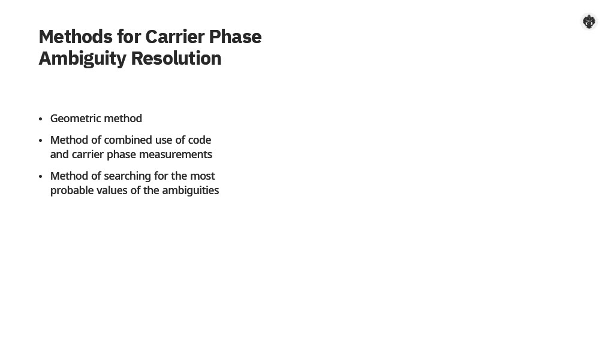
For this, the following approaches are implemented: 1. Geometric method where after capturing a radio signal and starting phase measurements, integer phase changes, i.e., cycles, are continuously monitored. The reliability of ambiguity resolution depends on the duration of satellite observation. 2. The method of combined use of code and carrier phase measurements. It can only be implemented if the receiver supports two different carrier frequencies L1 and L2. Recently was added a third frequency L5, which increases accuracy. 3. Method of searching for the most probable values of the ambiguities. This method requires the use of two or more fixed receivers.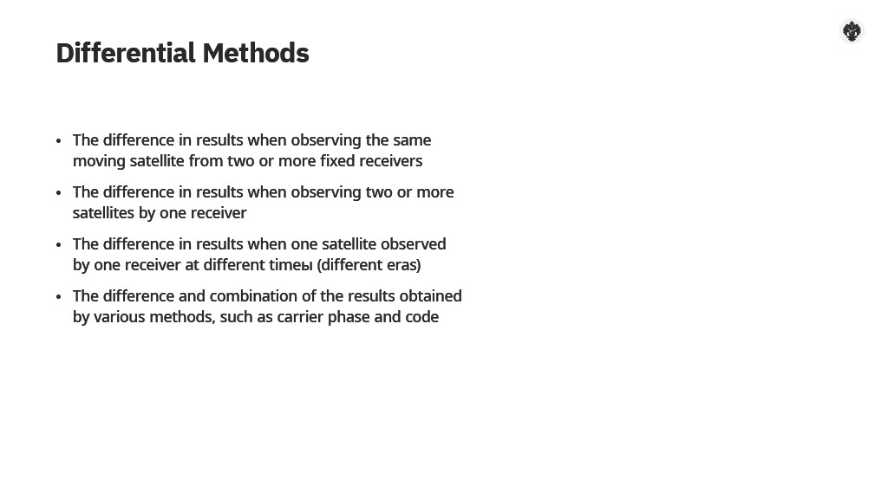
The main idea of this method implementation is that when we perform satellite measurements from two or more receivers, the distance between them during the observation session remains unchanged, and therefore the number of wavelengths that fit at this distance is also constant. Since a sufficiently large amount of information is accumulated during the observation session, it is possible to repeatedly find the distances to the observed satellites, which, in turn, can be used to repeatedly determine the lengths of the baseline connecting the points at which the satellite receivers are installed. Note that ambiguity resolution is a key problem when performing carrier phase measurements with GNSS receivers. As already noted, differential methods involve calculating the differences of various quantities. There are several options for difference samples: 1. The difference in results when observing the same moving satellite from two or more fixed receivers. 2. The difference in results when observing two or more satellites with one receiver. 3. The difference in results when one satellite is observed by one receiver at different times (different eras). 4. The difference and combination of the results obtained by various methods, such as carrier phase and code. Any other combinations of difference formation are possible. Including differential results at different carrier frequencies, the use of several channels in one receiver for satellites of different systems, etc. Along with phase and code measurements in satellite geodesy, a method based on the Doppler effect is also worth mentioning. Doppler effect - an increase (or decrease) in the frequency of sound, light, or other waves as the source and observer move toward (or away from) each other. When the source is approaching, the frequency increases, while the wavelength decreases. When the source is moving away, the frequency decreases, while the wavelength increases. It is logical that if static observations of moving satellites are performed, then this effect appears and can be used to increase the accuracy of assessments, because the satellites are moving. The Doppler effect can be used to estimate the rate of change of the distance measured to the satellite.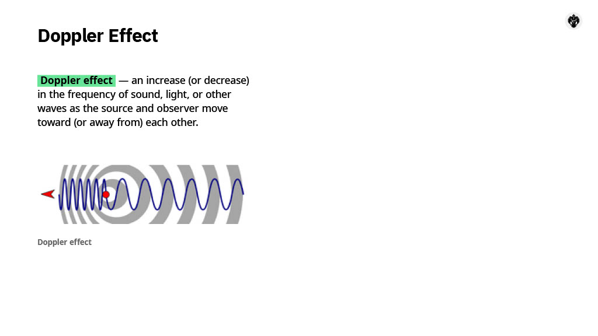
Basically, the Doppler effect is used to determine approximate distances in solving the problem of ambiguity of carrier phase measurements. We talked about the physical and mathematical principles of making GNSS measurements. Let’s talk about organizational principles now.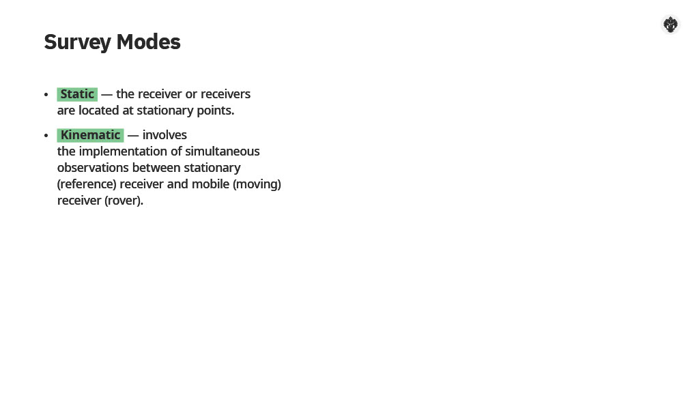
For example, according to the survey mode, all geodetic GNSS methods are conventionally divided into: 1.Static - the receiver or receivers are located at stationary points. 2.Kinematic - involves the implementation of simultaneous observations between a stationary (reference) and mobile receivers (rovers). To perform this method, it is necessary to perform initialization at the first point (ambiguity solution), and when moving mobile receivers between points, it is necessary to maintain a constant capture of 4-5 satellites. If signal is lost, the initialization procedure is repeated. The method has two varieties: Stop; Go kinematics and real-time kinematics (Real-Time Kinematic - RTK). Kinematic methods are considered differential - based on the entering of differential corrections, determined by the base station, in the results of measurements performed on moving receivers. Differential corrections - corrections defined as the difference between the measured pseudorange values from codes and/or phase measurements and the distance values between the receiver and the satellites calculated from the known values of the point coordinates and the satellite’s on-board ephemeris. Such corrections can be sent to the moving receiver via radio or GSM. In this case, they talk about the RTK method. If corrections are not sent in real time, but are entered at the post-processing stage, then this method is called PPK - Post processing kinematic It is believed that the differential method for kinematics provides high quality measurements within a radius of 30 km from the base station. Most UAVs are equipped with geodetic receivers with different accuracy.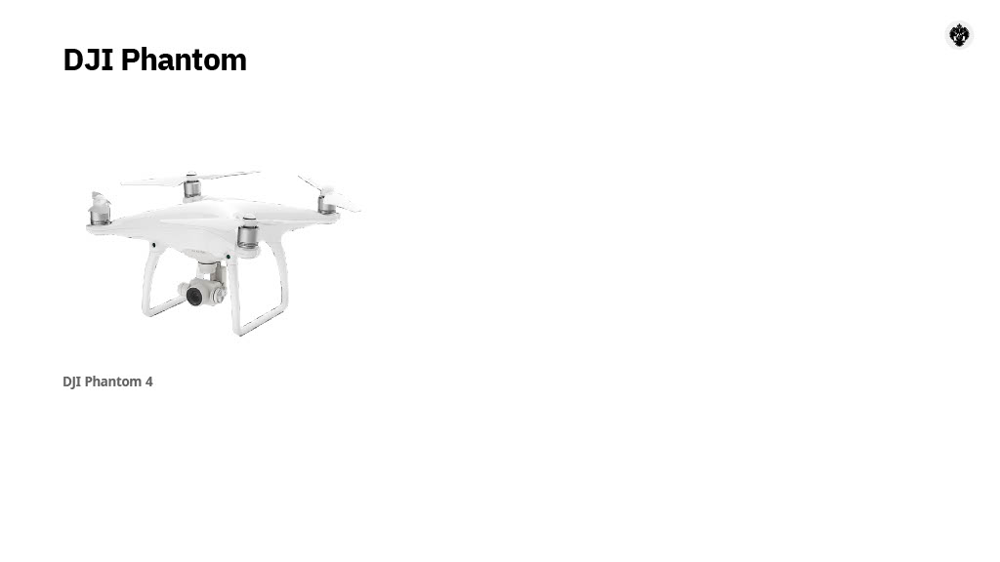
For example, the most popular model - DJI Phantom is equipped with a receiver with L1 operating frequency. The receiver can work with GLONASS and GPS systems. Claimed positioning accuracy + - 0.5m horizontal and 1.5m vertical. These indicators strongly depend on the point on the Earth, ionospheric disturbances, the number of satellites, etc. And in most cases, accuracy is about 1.5-2 times lower.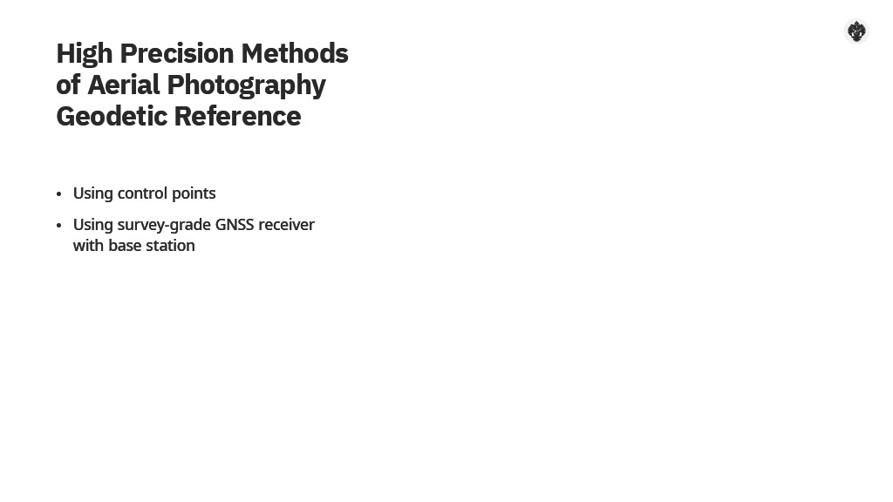
The presence of such a receiver allows you to perform aerial photography with an accuracy of the end product up to 4 m. In some cases, this is enough. If higher accuracy is needed, there are two ways: 1. Using control points. 2. Using survey-grade GNSS receiver with base station.2.4 High Resultion Methods
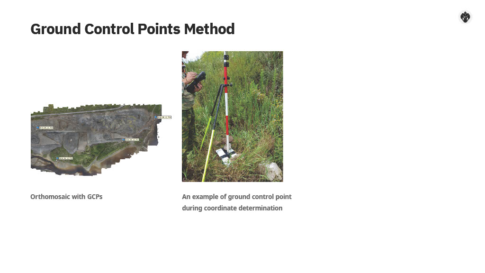
Now, let´s talk about different approaches to high-precision aerial photography. Both approaches use GNSS surveying techniques.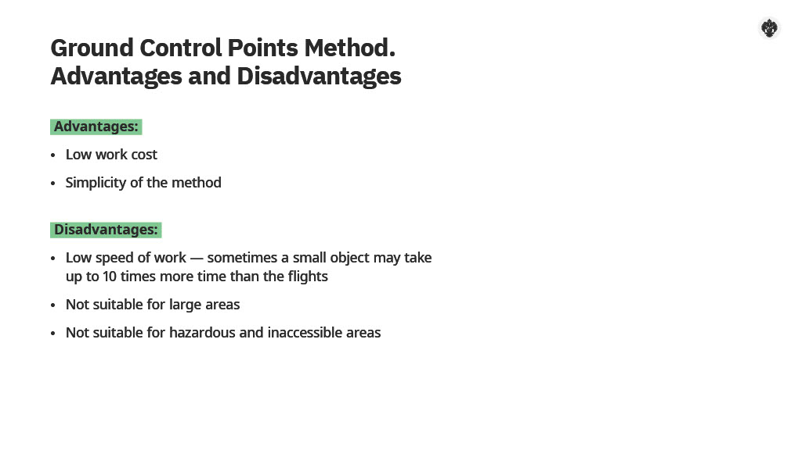
The first method is the use of ground control points - GCP. This method originates in the era of analog photogrammetry. The method has been successfully applied for a long time. The main innovation - the coordinates and heights of control points are determined by GNSS methods, not by leveling and linear-angular measurements. At least 3 objects clearly visible and identifiable from the air are located on the territory of the survey, for which coordinates should be obtained from ground-based geodetic methods - in our case, by GNSS methods. Most often, crosses are used in a contrasting color (for example, white or black when shooting in winter). You can also use round plastic plates. Or any other configuration that provides unambiguous recognition and fastening reliability. GCP should be placed evenly over the entire area or length (for linear works) of the survey area. After placement, the coordinates of the control points are determined in the desired coordinate system and vertical datum. After photogrammetric processing of the images, ground control points are accepted as reference points and, according to them, the survey is re-adjusted (transformed) into the desired coordinate system. At the same time, part of the control points can be used as check points to control the quality of re-adjustment. To do this, the original coordinates and the coordinates taken from the orthomosaic are compared, and the standard error is calculated. This method has some obvious advantages and disadvantages. Advantages: 1.Low work cost. 2.Simplicity of the method - it is easy to find the GCP among the buildings of the city, they include manholes, road markings - - it is really easy. In a field it is more difficult, because the GCPs should be installed in advance. So, it depends on where the work is performed - the GCPs can be easy or difficult to determine. Disadvantages: 1.Low speed of work. - sometimes a small object may take up to 10 GCPs, and their placement takes more time than the aerial photography itself. 2. Not suitable for large areas - it is difficult to install GCPs. 3. Not suitable for hazardous and inaccessible areas. For example, if you are shooting dump with hazardous waste, it would be unpleasant and dangerous to walk there. .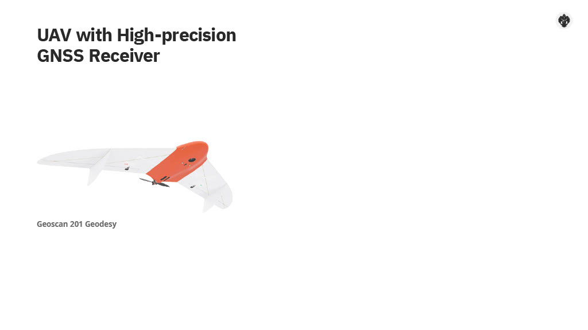
GCP method is more often used at small facilities or together with the equipment of the lower price category (up to 500 thousand rub). For more complex and larger tasks, it is preferable to have a UAV equipped with a high-precision GNSS receiver. ground tracking stations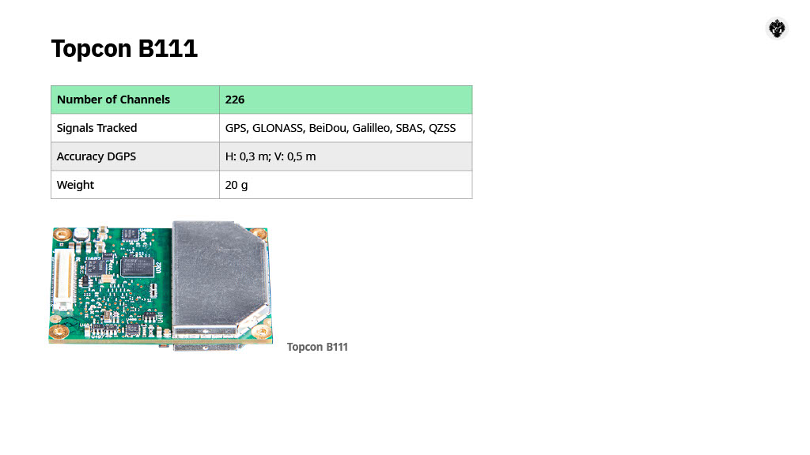
An example is the Geoscan 201 UAV with a Topcon B111 dual-frequency L1/L2 receiver on board. Topcon B111 is a compact device weighing less than 20 grams. You can see its specifications on the screen. Using a base station (no further than 30 km), the error in determining the photos centers coordinates will not exceed 5 cm with joint differential adjustment. Earlier we mentioned this method - Post Processing Kinematic. In theory, such UAVs do not require the use of GCPs. However, in this way, the survey is uncontrolled, that is why it is rarely used. It is recommended to make GCPs, but use them only as check points. Or as a reference for transformation into the required coordinate system. Let us concider advantages and disadvantages of this approach.
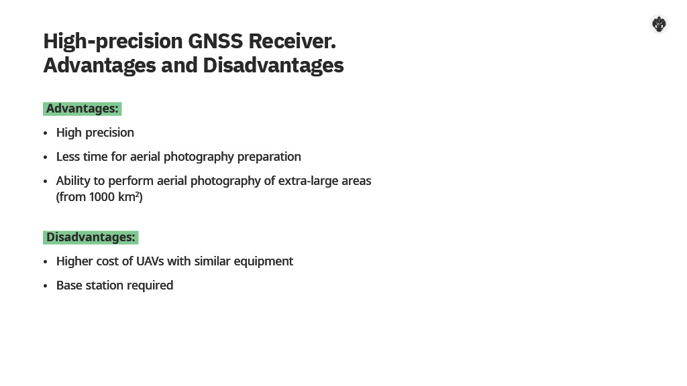
Advantages: 1.High precision. 2.Less time for aerial photography preparation 3.Ability to perform aerial photography of extra-large areas (from 1000 km2) Disadvantages: 1.Higher cost of UAVs with similar equipment 2.Base station required - It is also costly and not everyoune can afford it. Must be noted there is an opportunity not to use a base station. This is possible using the PPP method. PPP (Precise Point Positioning) is a positioning method for obtaining high-precision coordinates by obtaining corrections to the orbital ephemerides and onboard clocks of all visible satellites from a network source of corrections.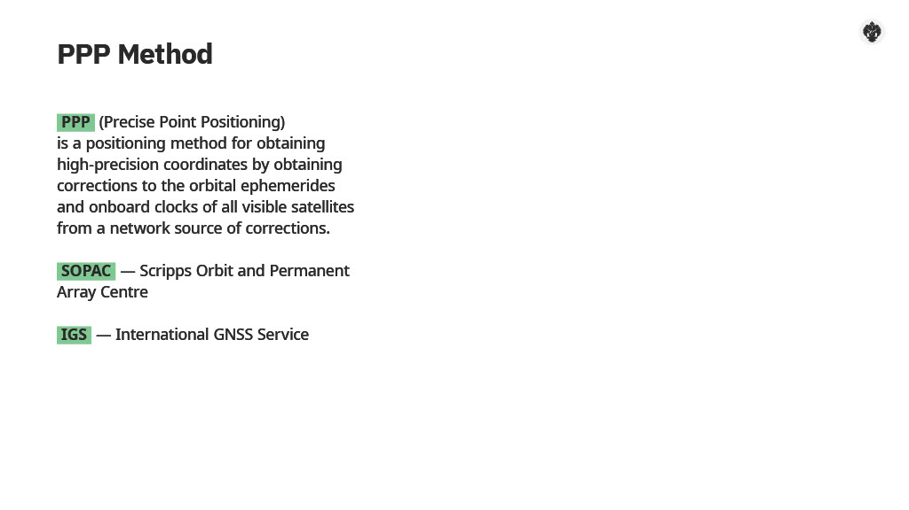
The PPP method was developed by the Canadian company Novatel and introduced to the market in 2005. According to the developers, the method ensures the accuracy of determining the coordinates of points on the earth’s surface in WGS-84 system with centimeter accuracy comparable with the accuracy of differential methods. As already mentioned, the main advantage of the method is the implementation of only one two or three frequency receiver. We already know that GNSS has a ground-based segment for monitoring and tracking satellites. Using special SOPAC and IGS network resources You can see the meanings of these letters in the slide. the user receives files that contain the exact values of the ephemeris and satellite clock corrections, information about the delay of the satellite signal in the ionosphere and troposphere. This information is collected by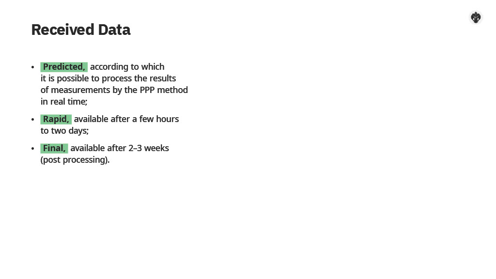
Files of ephemeris and corrections to the clock of navigation satellites can be of three types: 1.Predicted, according to which it is possible to process the results of measurements by the PPP method in real time; 2.Rapid, available after a few hours and up to two days 3.Final, available after 2-3 weeks (post processing) Novatel implements its technology based on Novatel Waypoint software. The user can download the necessary files of ephemeris and corrections for the required date in two clicks and proceed to the GNSS processing. However, it is worth noting that the PPP method was implemented not only by Novatel. Other companies offer similar solutions. In particular, Trimble RTX technology from Trimble or MADOCA from the Japan Space Agency.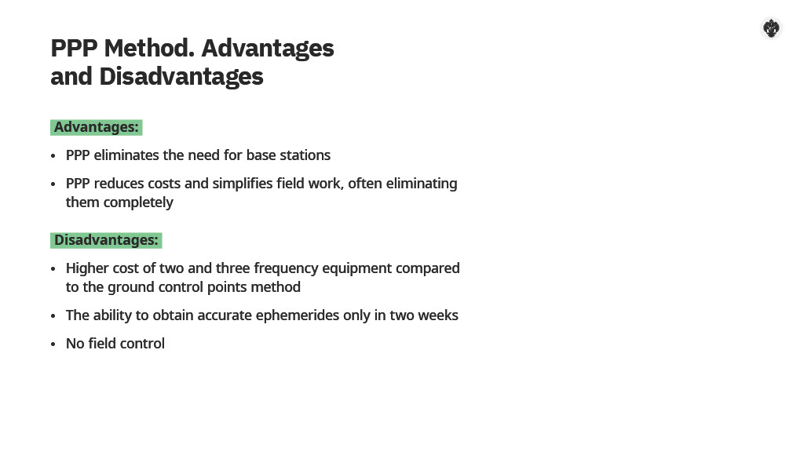
Let’s consider PPP methods advantages: 1.PPP allows you not to use base stations 2.PPP reduces costs and simplifies field works, often eliminating them completely Disadvantages: 1.Higher cost of two and three frequency equipment compared to the ground control points method. 2.The ability to obtain accurate ephemerides only in two weeks. 3.No field control. The choice of a particular reference method is highly dependent on the facility and on available technologies and equipment. For large and complex objects, it is better to use UAV with high-precision receivers. For small objects, the GCP method may be sufficient. However, it is worth noting technological progress and the reduction in the cost of precision equipment. By the beginning of 2020, a set of a quadcopter with a two frequency receiver and a base station with three carrier frequencies costs about 500,000 rubles. This is a relatively small sum when it comes to professional use. In the future, we will observe the gradual withering away of the GCP method and its replacement with high-quality equipment and new processing methods - PPP. In this module we considered various coordinate systems, the state geodetic network, and the principles of its construction. We paid much attention to modern global navigation systems, methods for determining coordinates using GNSS. We learned how the geodetic control of aerial photography from UAVs is implemented, the advantages and disadvantages of various methods.